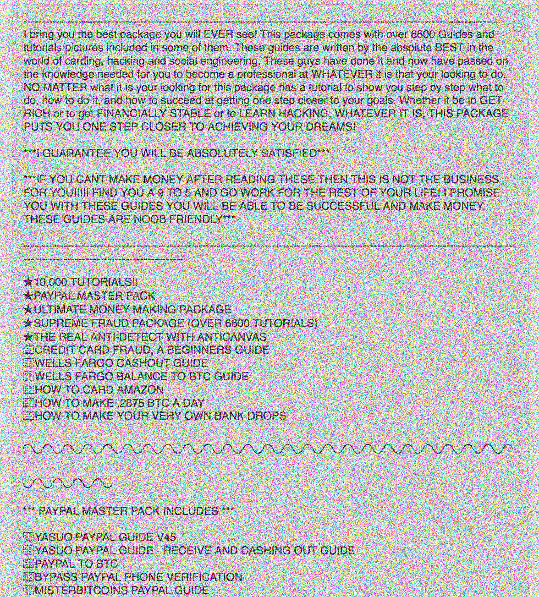
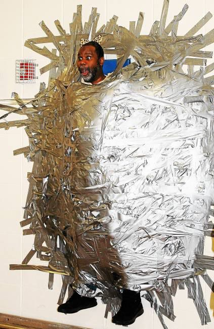
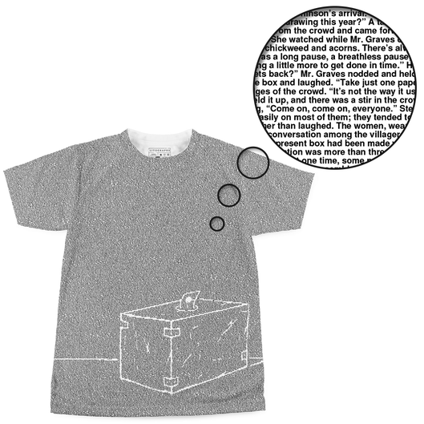

Vintage Marxist scholarship often arrives at the image of feet marching, zombie-like, off to work. What moves these feet, the scholars ask. Where is the line between forced obedience and personal volition?

The question is theoretically overtrodden, and there's no strict answer. But in concert with the gamification of everyday life via biometrics and big data, what we could find out is the precise number of steps the worker has taken, perhaps spiking their health care rate if our prescribed exercise target hasn't been met. The more information available to individuals, the more rigorously they are expected to police themselves.
In the same token, we must self-regulate our use of technology as well... As my friend Zak writes, “Platforms and devices are like drugs and food, and we style our technological ethos as one plans a diet; the conflation of ethics and consumption is a hallmark of neoliberal thinking.”
Prolific coder Michaël Trazzi offers his own “productivity hacks”in an article for the site Hackernoon. His tips include:
Step 1) Make a color-coded chart of how every fifteen minutes of your day is spent.
He expresses an extreme sense of horror vacui when confronted with his flattened, logistical life:

Empathy with a future self is an interesting concept. The Future Self's plight being only its outrage at the lollygagging indiscretions of a Past Self doesn't inspire much sympathy, from my perspective...
Step 2)Put your phone on mute and airplane mode, turning it off, and putting it in a sock within a sock within a sock within a sock and leaving it in your kitchen.
For someone as time-conscious as Michaël, we must assume there is signifigance to each step of the process- superstitiously muting the phone before turning it off, bulking it out to a soft tumescence with layers of sock, putting it in the kitchen, where it is out of place, all to designate his device as a thing of filth.
On the subject of layers, obfuscation, and D.I.Y., a tactic I've observed on the Deepweb marketplace Dream Market is the selling of huge bundles of pdf guides to illegal activities for between 5 and 10 USD (around ฿0.001022- ฿0.002044), in lieu of tangible illegal items like drugs or DVDs (hence sidestepping the shipping issue.)
The same user has listed multiple bundles, with names like "**BEST FRAUD PACKAGE ON THE DARK WEB**" each with a similar-sounding yet (as far as I could tell) distinct list of several hundred documents on VPN’s, hacking, fake ID’s, credit card fraud and a few astrology guides as well as scans of ID’s and forged documents…
 I wonder who would have enough time to implement even a fraction of these hundreds if not thousands of scams. Would they set up a productivity schedule like Michaël and try a few different ones out each day?
Another question is what this group of documents is even worth... on one hand it seems like paying $5 for what could earn potential millions is an incredible investment. On the other hand, when I started searching some of the documents that were listed specifically, every single one of them came up online for free on document-hosting sites like coursehero.com. When it comes down to it, this package isn't worth the energy feeding the server it's surreptitiously hosted on.

(From the free online scam documents I learned the old-fashioned "black-hat" Search Engine Optimization technique of adding a bunch of unrelated text and tags in a white font on a white background to promote your site in search results. >Hi Mom<
Highlighting= invisible ink decoder.)
(Another tip was using public records to find out someone’s mother’s maiden name when prompted as a security question. )
Another form of self-policing is the self-gifting phenomenon: subscription boxes, which aim to capture the excitement of opening a package with unknown contents tailored to your interests while adhering to a reliable monthly/quarterly subscription model.
In his essay, “The Grace Machine : Of Turns, Wheels and Limbs”, Lars Spuybroek writes, “In the Maori gift culture on which Mauss based his studies, this power is identied as the hau, often translated as the ‘spirit of the gift’. What exactly, then, is this power, which he calls the ‘force of things’? For almost a century, this has posed serious problems in anthropology. Some have vehemently denied its existence (...) others have categorized it as a form of ‘personhood’, an animist notion in which the donor’s personality – somehow – remains in the given object, causing it inevitably to return to its source. After the social and economic models, this adds a psychological explanation for gift-giving.”
How does the 'spirit of the gift’ perservere in this semi-simulated gift encounter, in which we act as both donor and recipient, with the subscription service as proxy? In what ways is the entire internet ecosystem, built to facilitate equal-opprotunity information access and constantly throwing off meme-ish excesses, a society of the gift?
The psychological angle Spuybroek writes of is thematically embedded in the subscription box medium. They double as prescription boxes, and often tie in with various clinically diagnosed or self-diagnosed pathologies such as anxiety and AD/HD. The former is treated via box primarily through sensuous distraction (fidget toys, aromatherapy) the latter, through task assignments that demand focused attention. (See, The Challenge Box)
There is something strange in a course of treatment that is also built on the principles of novelty and blind, contract-bound consumerism. The most cynical angle is that the promise to blindly, indefinitely oscillate between non-invasive treatments presupposes that there is no such thing as an effective solution.
The Freudian theory behind nervous tics paints them as unconscious symptoms of sexual repression. On the other hand, 20th century French theorist Georges Bataille positions the sexual libido not as the absolute center of all things, but as part of the larger over-exuberance that plagues all carbon-based life-forms. (A theory more metabolic than psychoanalytic in nature.) Bataille also emphasizes that in the past, this excess was diffused not on an individual level, but through orgiastic or destructive group activities such as ritual sacrifice. In his 1949 essay, The Accursed Share, he advises for first-world societies to charitably distribute wealth or risk losing everything in a catastrophic upheaval.
But charity, especially in its current iterations, produces its own excesses… Take the loosely veiled form of contemporary crucifixion known as the “Duct Tape Fundraiser”.
The premise is that a principal or teacher stands on a chair, and students pay per strip of tape to one by home come up and plaster the teacher to the wall. At the very end of the event the chair is removed from the teacher's feet so they hover a few inches above the floor. Their faces and feet are generally the only parts of their bodies left uncovered
Whether the appeal of the event rests more in seeing an authority figure publicly humiliated (in the tradition of a flagpole wedgie) or the sheer feat of physics is anyone’s guess.
Based on the photos, it seems that there is also always more money, energy, enthusiasm and tape than would be purely necessary to attatch a person to the wall, and the person ends up (like the sock) bloated and mummified as if ensared in the color-coded strands of a hyperproductive spider. There is a seemingly endless trove of these images.
Unlike my other objects of critique, this is not an instance of neoliberal self-policing but a collective effort. Yet it relates to the other examples in its institution of an arbitrary/once-removed/aestheticized conception of value (tape=money) and cheerfully channels certain obsessive-compulsive and fascistic strains of the human character. It is certainly a neoliberal phenomenon for public schools to be so underfunded, they have to resort to what at the very least looks like public torture.
(T-shirt features the entire text of Shirley Jackson’s The Lottery as a repeat graphic)
